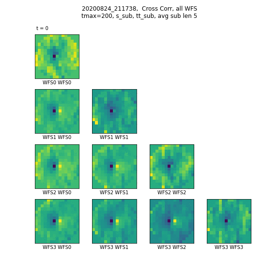
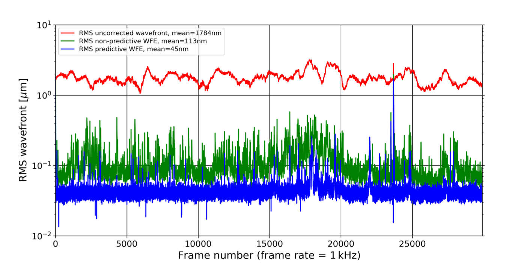
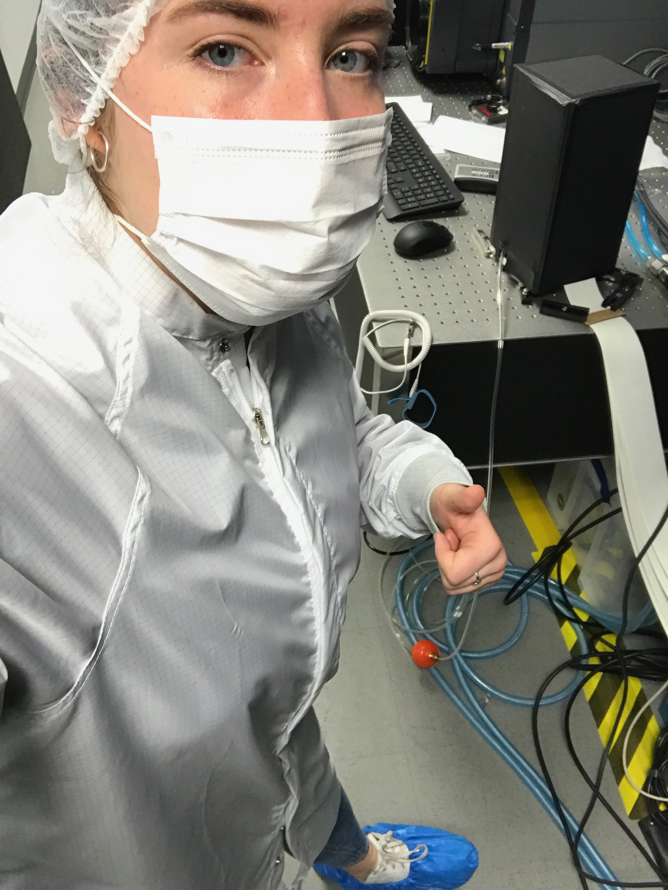

Wavefront profiling via correlation of GLAO open loop telemetry
SPIE 2022 Proceeding - E. McEwen, R. Dungee, M. Chun, O. Lai, C. Barnec
Full Paper

Adaptive Optics (AO) used in ground based observatories can be strengthened in both design and algorithms by a more detailed understanding of the atmosphere they seek to correct. Nowhere is this more true than on Maunakea, where a clearer profile of the atmosphere informs AO system development from the small separations of Extreme AO (ExAO) to the wide field Ground Layer AO (GLAO). Employing telemetry obtained from the ımaka GLAO demonstrator on the University of Hawaii 2.2-meter telescope, we apply a wind profiling method that identifies turbulent layer velocities through spatial-temporal cross correlations of multiple wavefront sensors (WFSs). We compare the derived layer velocities with nearby wind anemometer data and meteorological model predictions of the upper wind speeds and discuss similarities and differences. The strengths and limitations of this profiling method are evaluated through successful recovery of injected, simulated layers into real telemetry. We detail the profilers’ results, including the percentage of data with viable estimates, on four characteristic ımaka observing runs on open loop telemetry throughout both winter and summer targets. We report on how similar layers are to external measures, the confidence of these results, and the potential for future use of this technique on other multi conjugate AO systems.
Demonstrating predictive wavefront control with the Keck II near-infrared pyramid wavefront sensor
SPIE 2019 Proceeding - R. Jensen-Clem, C. Z. Bond, S. Cetre, E. McEwen, P. Wizinowich, S. Ragland, D. Mawet, J. Graham
Full Paper

The success of ground-based instruments for high contrast exoplanet imaging depends on the degree to which adaptive optics (AO) systems can mitigate atmospheric turbulence. While modern AO systems typically suffer from millisecond time lags between wavefront measurement and control, predictive wavefront control (pWFC) is a means of compensating for those time lags using previous wavefront measurements, thereby improving the raw contrast in the post-coronagraphic science focal plane. A method of predictive control based on Empirical Orthogonal Functions (EOF) has previously been proposed and demonstrated on Subaru/SCExAO. In this paper we present initial tests of this method for application to the near-infrared pyramid wavefront sensor (PYWFS) recently installed in the Keck II AO system. We demonstrate the expected root-mean-square (RMS) wavefront error and contrast benefits of pWFC based on simulations, applying pWFC to on-sky telemetry data saved during commissioning of the PYWFS. We discuss how the performance varies as different temporal and spatial scales are included in the computation of the predictive filter. We further describe the implementation of EOF pWFC within the PYWFS dedicated real-time controller (RTC), and, via daytime testing at the observatory, we demonstrate the performance of pWFC in real time when pre-computed phase screens are applied to the deformable mirror (DM).
The Keck Planet Imager and Characterizer: Demonstrating advanced exoplanet characterization techniques for future extremely large telescopes
SPIE 2019 Proceeding - N.Jovanovic, J. R. Delorme, C. Z. Bond, S. Cetre, D. Mawet, D. Echeverri, J. K. Wallace, R. Bartos, S. Lilley, S. Ragland, G. Ruane, P. Wizinowich, M. Chun, J. Wang, J. Wang, M. Fitzgerald, K. Matthews, J. Pezzato, B. Calvin, M. Millar-Blanchaer, E. C. Martin, E. Wetherell, E. Wang, S. Jacobson, E. Warmbier, C. Lockhart, D. Hall, R. Jensen-Clem, E. McEwen
Full Paper

The Keck Planet Imager and Characterizer (KPIC) is an upgrade to the Keck II adaptive optics system enabling high contrast imaging and high-resolution spectroscopic characterization of giant exoplanets in the mid-infrared (2-5 microns). The KPIC instrument will be developed in phases. Phase I entails the installation of an infrared pyramid wavefront sensor (PyWFS) based on a fast, low-noise SAPHIRA IR-APD array. The ultra-sensitive infrared PyWFS will enable high contrast studies of infant exoplanets around cool, red, and/or obscured targets in star forming regions. In addition, the light downstream of the PyWFS will be coupled into an array of single-mode fibers with the aid of an active fiber injection unit (FIU). In turn, these fibers route light to Keck's high-resolution infrared spectrograph NIRSPEC, so that high dispersion coronagraphy (HDC) can be implemented for the first time. HDC optimally pairs high contrast imaging and high-resolution spectroscopy allowing detailed characterization of exoplanet atmospheres, including molecular composition, spin measurements, and Doppler imaging.
Here we provide an overview of the instrument, its science scope, and report on recent results from on-sky commissioning of Phase I. The instrument design and techniques developed will be key for more advanced instrument concepts needed for the extremely large telescopes of the future.